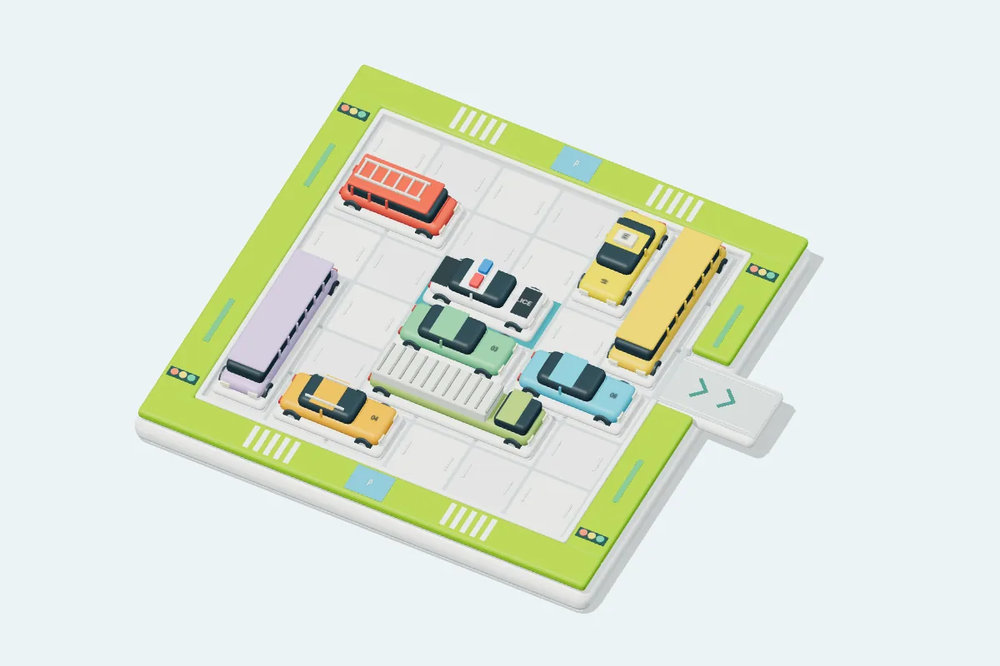

益智移车出库
免费在线玩益智移车出库：移动停车场里的车辆，让警车从出口驶出。120 个独立关卡，支持拖动、撤销、提示和刷新续玩，适合手机、平板与电脑。
1 人同屏游玩，约 2–10 分钟一局。

玩法
- 车辆只能沿车身方向前后滑动，不能转弯、重叠或穿过其他车辆。
- 警车从 6 × 6 停车场右侧第三行出口完全驶出即通关，其他车辆不能出库。
- 一次连续滑动任意格数计一步，出库计最后一步；达到最少步数获得三星，多五步以内获得二星，其余通关获得一星。
- 提供 120 个经求解验证的独立关卡、撤销、重做、下一步提示及本地进度保存。
适合喜欢移车玩具、空间推理和单人逻辑挑战，或想和孩子一起思考解法的玩家。